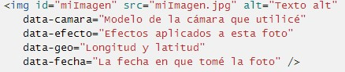
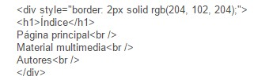

Data-skip
The data attribute can be a great help when saving data. No doubt these new bespoke attributes are the appropriate way to host metadata. Example:
Div
Defines a block of content or section of the page, you can apply different styles. Example:
